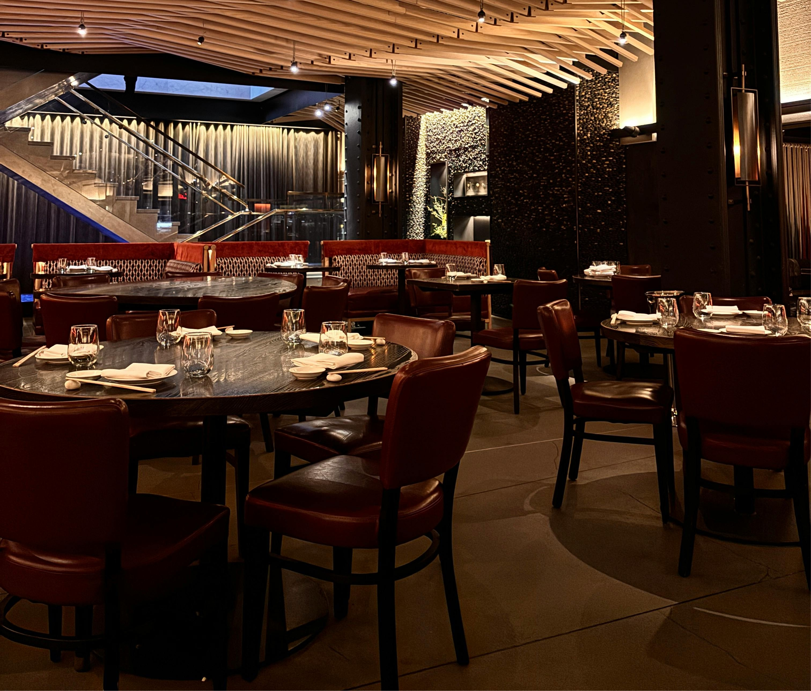
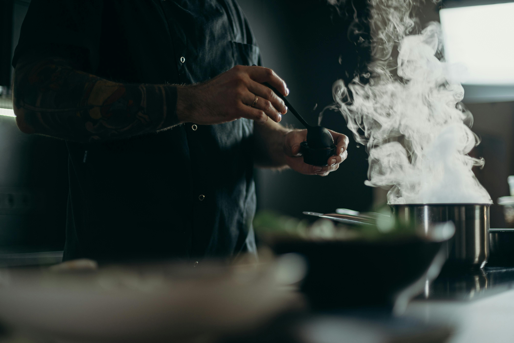
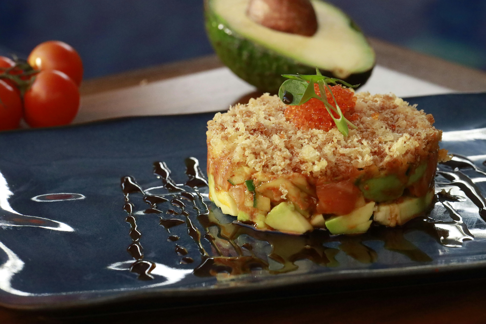
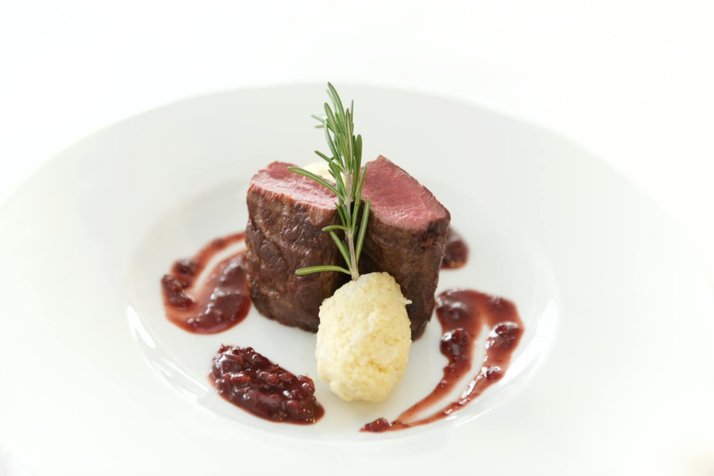
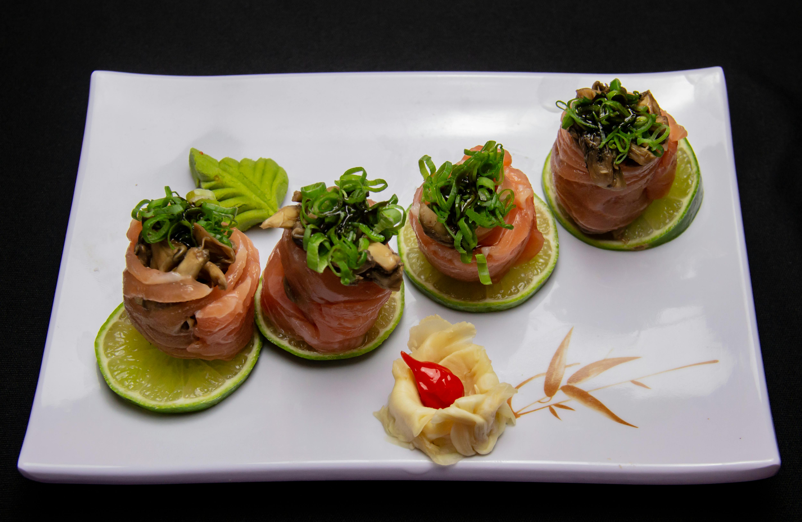

Restaurant Els Coberts
El restaurant innovador del centre de Barcelona.
Sobre nosaltres

Situat al cor del barri de Gràcia, aquest restaurant de luxe ofereix una experiència gastronòmica exclusiva en un ambient elegant i acollidor. L’espai combina disseny contemporani amb detalls càlids que conviden a gaudir d’un àpat tranquil i sofisticat. Cada racó està pensat per crear una atmosfera íntima, ideal tant per a ocasions especials com per descobrir l’alta cuina en un entorn únic de Barcelona. Les llums subtils i la decoració cuidada creen una sensació d’exclusivitat, mentre que la música ambiental acompanya els moments gastronòmics amb suavitat. Els materials nobles i els acabats artesanals reforcen la sensació de luxe i confort. Tot plegat convida a viure una experiència completa més enllà del simple menjar, on cada detall compta. Els cambrers ofereixen un servei atent i discret, assegurant que cada visita sigui personalitzada i memorable. La combinació d’arquitectura, ambient i gastronomia converteix aquest lloc en un referent de sofisticació al barri de Gràcia.
La cuina del restaurant destaca per la seva fusió entre tradició i innovació, utilitzant productes de proximitat i de temporada amb una execució impecable. S’hi apliquen tècniques modernes com coccions a baixa temperatura, emulsions delicades i presentacions artístiques que potencien els sabors naturals. L’objectiu és oferir plats equilibrats i sorprenents, convertint cada degustació en una experiència gastronòmica refinada i memorable. Els xefs treballen amb precisió i creativitat, combinant textures i aromes per despertar tots els sentits. La innovació es complementa amb un profund respecte pels ingredients, garantint qualitat i frescor en cada plat. Cada servei es concep com un petit espectacle culinari, on la tècnica i l’art es troben per sorprendre i delectar el comensal.

Carta
Menús de la temporada
Éclat de Tonina
Aquest menú s’ha dissenyat per oferir una experiència gastronòmica que combini la frescor del mar amb la sofisticació de la cuina de terra. Les tècniques aplicades inclouen tallat i emplatat delicat, coccions precises i elaboració de salses equilibrades que potencien els sabors naturals dels ingredients. L’objectiu és que el comensal gaudeixi d’un recorregut harmoniós entre textures i aromes, des de la frescor i suavitat del tartar de tonyina fins a la intensitat i elegància del filet Rossini, creant un àpat refinat, equilibrat i absolutament memorable.


Boscos i Mar
Aquest menú s’ha concebut per oferir una experiència gastronòmica que fusioni sabors naturals del bosc i del mar amb una presentació elegant. Les tècniques aplicades inclouen coccions lentes, manipulació delicada de productes frescos i combinacions de textures sorprenents, sempre buscant potenciar els sabors originals dels ingredients. L’objectiu és que el comensal gaudeixi d’un recorregut equilibrat i sofisticat, des de la suavitat i aroma dels farcells de boletus fins a la frescor i delicadesa del salmó, oferint un àpat refinat, creatiu i inoblidable.


Galeria de fotos